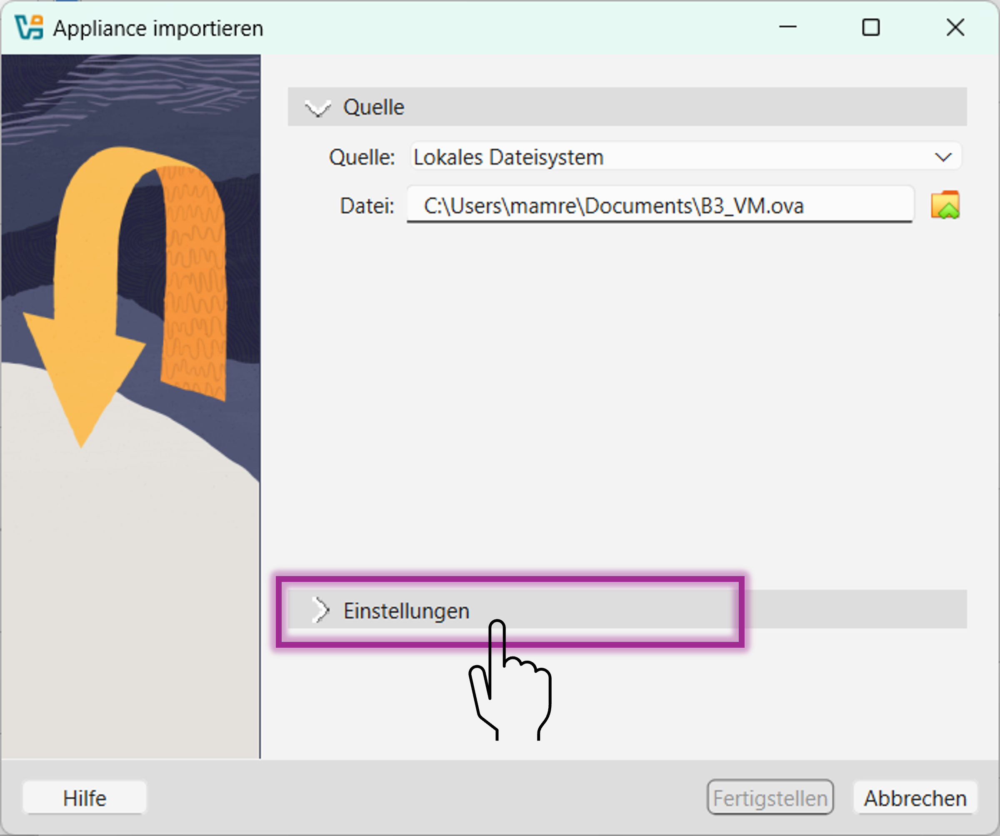
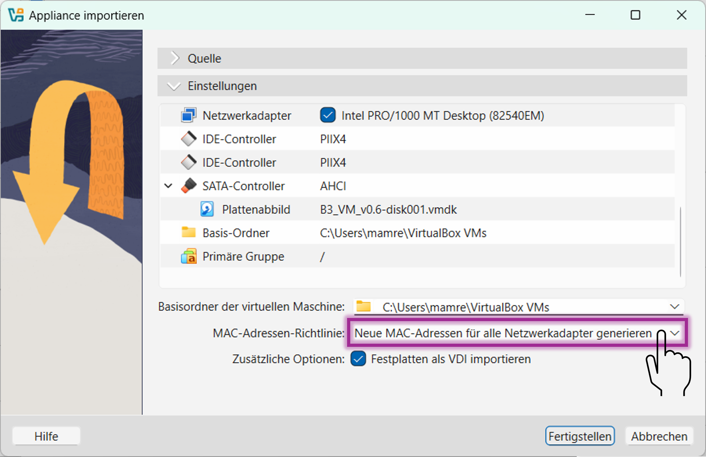
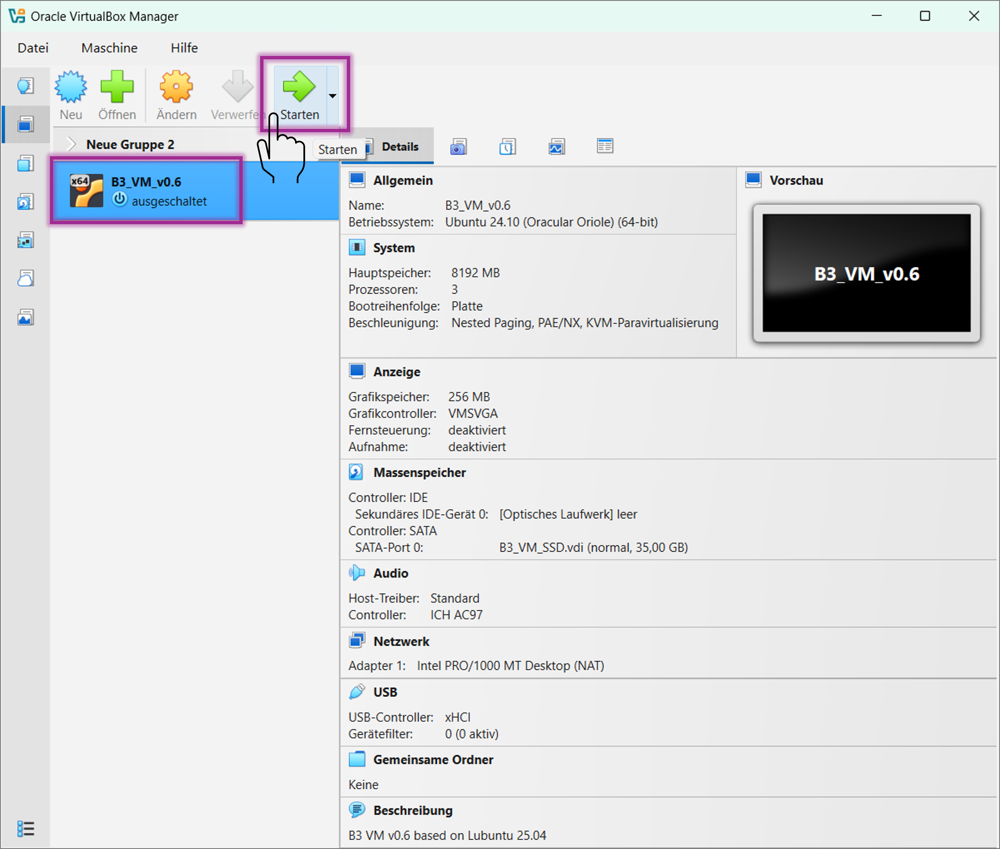

Einrichtung Ihrer Virtuellen Maschine
In diesem Kurs können Sie mit einer Virtuelle Maschine (VM) arbeiten, auf der bereits alle notwendigen Programme installiert sind. Dies dient der Vereinheitlichung der Lernumgebung, sowie der Vereinfachung von Installationsprozessen.
Sie haben Administrationsrechte auf Ihrer Virtuellen
Maschine.
Für technische Unterstützung durch die Lehrkraft ist es
notwendig, dass Sie die einheitliche Umgebung als solche aufrechterhalten und
keine unerwarteten Änderungen durchführen.
I) Einrichtung des Hypervisors
- Download des Hypervisiors (VirtualBox in Version 7.2.2)
Windows hosts
macOS / Intel hosts
Linux distributions - Lokale Installation der heruntergeladenen exe/dmg/deb/rpm Datei (je nach ihrem Host-Betriebssystem)
- Optional: Download des Oracle VirtualBox Extension Pack & Installation über Doppelklick
Hinweis: Es kann auch eine andere (neuere) Version von VirtualBox installiert werden, bzw. eine vorhandene Version von VirtualBox genutzt werden. Zu beachten ist dann jedoch, dass Sie auch die zur Version passenden Guest Additions im virtualisierten Betriebssystem nachinstallieren. Wenn Sie, wie oben beschrieben, die empfohlene VirtualBox Version 7.2.2 verwenden, dann müssen Sie keine Guest Additions nachinstallieren, da diese hierfür bereits vorinstalliert wurden.
II) Einrichtung des Gastsystems (die virtuelle Maschine)
- Download der neuesten Version der B3 Virtuellen Maschine: b3-f.de/vm
- Parallel, während des Downloads: Installieren Sie Virtualbox und das VirtualBox Extension Pack
- Doppelklick auf Ihre heruntergeladene ova Datei. Diese finden Sie in Ihrem
Downloads Verzeichnis
z.B.: - VirtualBox öffnet sich. Folgen Sie den Anweisungen zum entpacken und
einrichten der VM.
Achten Sie auf ausreichend freien Festplattenplatz (~35GB).

 - Starten Sie Ihre VM nach dem erfolgreichen Import über Virtualbox:
 - Username:
user
Passwort: user - Willkommen in ihrer persönlichen VM!
- Sie können die heruntergeladene *.ova Datei aus Ihrem
Downloads-Verzeichnis nun löschen.
Die virtuelle Festplatte Ihrer VM befindet sich nun unter "C:\Users\<username>\VirtualBox VMs" <- Diese Dateien bitte belassen!